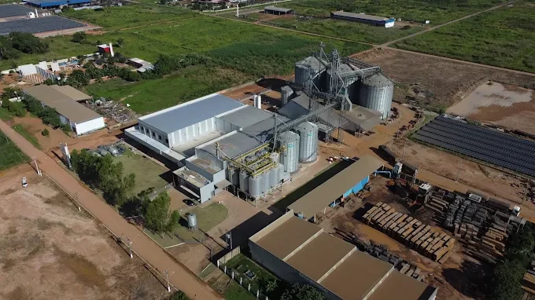

01
Problema
Identificação tardia de desvios; falta de histórico consolidado; dificuldade de acompanhar regiões diferentes do estoque.
01 / PROJETO · POINT TECH V1
Sensores acompanham temperatura e umidade para identificar desvios, registrar o histórico e apoiar uma resposta operacional mais rápida.
Protótipo conceitual da equipe IN POINT.
Não executa medições reais nesta apresentação.
A leitura da temperatura do ambiente integra o registro das condições de armazenamento e a avaliação de desvios.

Instalação apresentada pela equipe. A fotografia contextualiza o projeto; não representa implantação do sistema.
02 / FUNCIONAMENTO
Avance para acompanhar qual componente participa de cada etapa. Nas decisões, escolha uma resposta para seguir o caminho correspondente.
VISÃO GERAL DO PROCESSO
Conheça o percurso da informação pelo sistema.
Esta demonstração percorre a lógica proposta. Não executa medições nem comandos em equipamentos.
03 / PLANEJAMENTO
O Lean Canvas reúne a proposta. O 5W2H organiza o que será feito, por quê e como.
Selecione um bloco para ampliar a leitura. Conteúdo preservado do anexo.
Identificação tardia de desvios; falta de histórico consolidado; dificuldade de acompanhar regiões diferentes do estoque.
Operação de armazenagem, controle de qualidade e gestão na indústria de nutrição animal.
Medição multiponto; registro e visualização; alarmes e apoio a ações condicionadas.
Completude dos registros, atraso dos alarmes, tempo de resposta, disponibilidade e perdas normalizadas.
Disponibilizar informação ambiental por zona, com histórico local e alertas utilizáveis mesmo com internet intermitente.
Demonstração no SENAI, piloto acompanhado e futura integração por equipe técnica ou integrador.
Potencial redução de perdas e de esforço manual; economia medida após piloto, sem receita contratada.
Instrumentos, eletrônica, infraestrutura, software, instalação, calibração, operação e eventual climatização.
Nenhuma barreira difícil de copiar foi comprovada. Pretende-se desenvolver conhecimento do manejo local e integração simples, a validar com usuários.
PLANO DE AÇÃO
Sete perguntas para delimitar o desenvolvimento.
Desenvolver um MVP de monitoramento de temperatura e umidade, com registro local, interface, alertas e comando demonstrativo.
Identificar desvios nas condições de armazenamento e melhorar a rastreabilidade para apoiar a resposta operacional.
Desenvolvimento em bancada no SENAI. Aplicação proposta no armazenamento da SustenNutri.
Conforme o cronograma acadêmico: planejamento, desenvolvimento, ensaios, documentação e apresentação.
Davi, Brena, Alexia e Aisllyn, com orientação docente.
Medir, processar, registrar e informar. A atuação depende de parâmetros do processo, permissivos e validação.
O MVP depende de cotações. O cenário industrial de estudo considera investimento hipotético de R$ 4.680; não é orçamento aprovado.
04 / VIABILIDADE
Altere as premissas para explorar o retorno simples. O resultado é uma simulação sob as hipóteses informadas, não uma economia comprovada.
SIMULAÇÃO HIPOTÉTICA · Valores não validados e dependentes de confirmação operacional.
AGUARDANDO PREMISSASCOMO A HIPÓTESE SE APLICA
Selecione a parcela potencialmente evitável para visualizar a relação.
A barra representa apenas os 1,8% de perdas atuais. Azul = parcela potencialmente evitável.
O resultado aparece após o preenchimento e a confirmação das premissas.
A seção 9.4 do documento revisado usa um cenário histórico não validado: investimento de R$ 4.680 e perdas de R$ 19.800/ano. A taxa histórica de 1,8% ao ano não é uma perda comprovada da empresa. O cálculo em reais depende do valor monetário das perdas mensais, na mesma base e período; o percentual isolado não determina esse valor. O investimento e os valores financeiros dependem de confirmação. Monitorar não elimina perdas automaticamente: o benefício também depende da resposta operacional.
Perda potencialmente evitada (% do total de referência) = 1,8% × parcela evitável ÷ 100.
Economia bruta potencial = valor monetário das perdas atuais por mês × parcela evitável ÷ 100. Os 1,8% não são aplicados novamente a esse valor, pois ele já representa as perdas.
Benefício líquido mensal = economia bruta potencial − custo operacional adicional.
ROI = [(benefício líquido × meses − investimento) ÷ investimento] × 100.
Retorno simples = investimento ÷ benefício líquido, quando positivo.
Fonte: Auditoria técnica e projeto revisado SustenNutri, seções 9.3 e 9.4. Fluxos uniformes; H = meses ÷ 12. Custo operacional zero reproduz a simplificação do documento, não a ausência real de despesas. Sem desconto temporal, tributos, inflação ou valor residual.
05 / EQUIPE
Equipe responsável pelo desenvolvimento e pela apresentação do POINT TECH V1.
SENAI · GRUPO 6
Programador
Líder
Montadora
Montadora